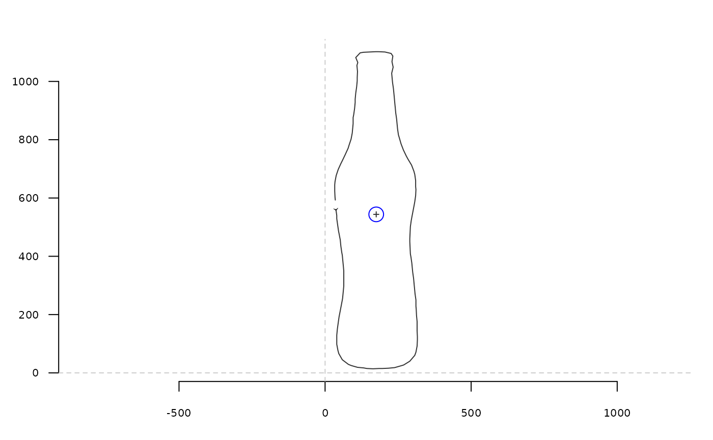

Returns the (x; y) centroid coordinates of a shape.
Arguments
- coo
matrixof(x; y)coordinates or any Coo object.
See also
Other centroid functions:
coo_centdist(),
coo_centsize()
Other coo_ utilities:
coo_align(),
coo_aligncalliper(),
coo_alignminradius(),
coo_alignxax(),
coo_baseline(),
coo_bookstein(),
coo_boundingbox(),
coo_calliper(),
coo_centdist(),
coo_center(),
coo_close(),
coo_down(),
coo_dxy(),
coo_extract(),
coo_flipx(),
coo_force2close(),
coo_interpolate(),
coo_is_closed(),
coo_jitter(),
coo_left(),
coo_likely_clockwise(),
coo_nb(),
coo_perim(),
coo_range(),
coo_rev(),
coo_right(),
coo_rotate(),
coo_rotatecenter(),
coo_sample(),
coo_sample_prop(),
coo_samplerr(),
coo_scale(),
coo_shearx(),
coo_slice(),
coo_slide(),
coo_slidedirection(),
coo_slidegap(),
coo_smooth(),
coo_smoothcurve(),
coo_template(),
coo_trans(),
coo_trim(),
coo_trimbottom(),
coo_trimtop(),
coo_untiltx(),
coo_up(),
is_equallyspacedradii()
Examples
b <- bot[1]
coo_plot(b)
xy <- coo_centpos(b)
points(xy[1], xy[2], cex=2, col='blue')

# on a Coo
coo_centpos(bot)
#> x y
#> brahma 175.0580 543.8696
#> caney 182.7083 507.7560
#> chimay 169.0106 314.8095
#> corona 185.0155 407.2326
#> deusventrue 179.5592 467.2632
#> duvel 179.2484 287.1180
#> franziskaner 161.3548 423.2016
#> grimbergen 166.7460 394.8651
#> guiness 182.2022 372.0546
#> hoegardeen 173.2539 526.9275
#> jupiler 175.6026 510.9744
#> kingfisher 161.8407 365.2253
#> latrappe 176.0368 344.0147
#> lindemanskriek 163.9261 405.4034
#> nicechouffe 170.5548 338.1233
#> pecheresse 175.3023 489.5271
#> sierranevada 166.5795 333.5682
#> tanglefoot 174.5862 346.1724
#> tauro 175.5230 511.7644
#> westmalle 161.7943 383.0000
#> amrut 162.7225 420.5654
#> ballantines 174.2260 329.5000
#> bushmills 180.8303 432.3697
#> chivas 182.0244 405.7500
#> dalmore 176.4258 328.0452
#> famousgrouse 174.1065 299.2071
#> glendronach 173.2792 409.4365
#> glenmorangie 177.2514 493.9385
#> highlandpark 167.4852 346.6272
#> jackdaniels 182.8867 387.7600
#> jb 172.6149 509.0057
#> johnniewalker 174.4940 165.5655
#> magallan 167.2482 388.9149
#> makersmark 176.4802 402.7571
#> oban 176.5307 447.6536
#> oldpotrero 165.9160 284.7634
#> redbreast 176.8305 202.1977
#> tamdhu 173.7955 530.5625
#> wildturkey 173.7243 537.4973
#> yoichi 181.2764 361.1545